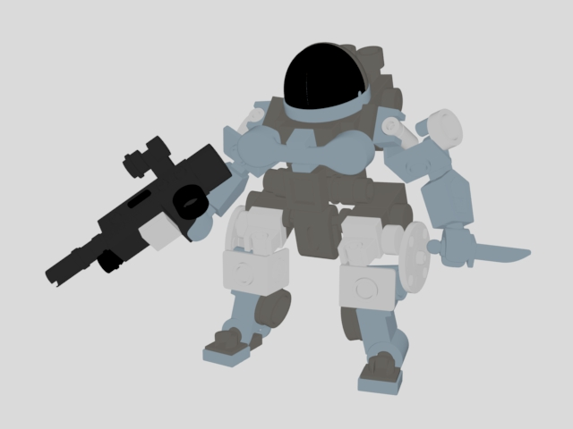
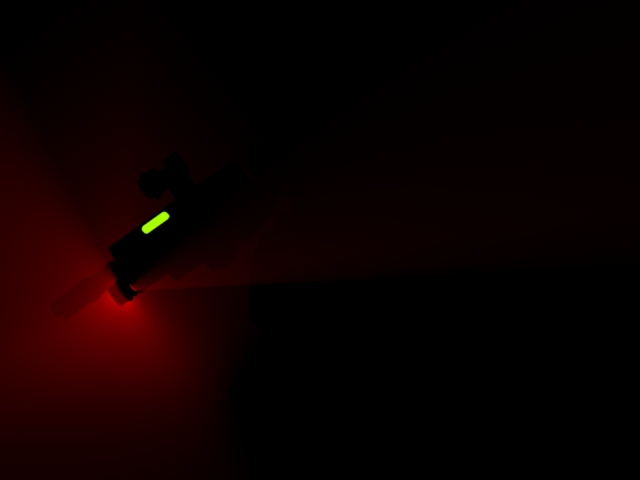
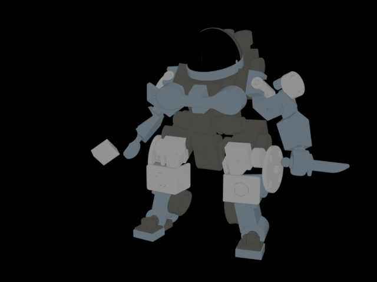
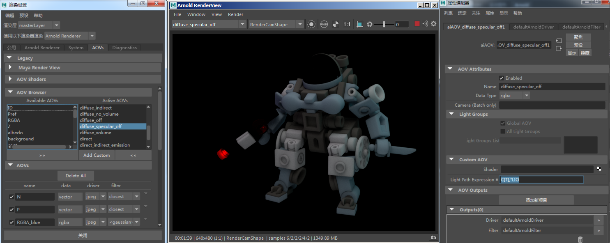
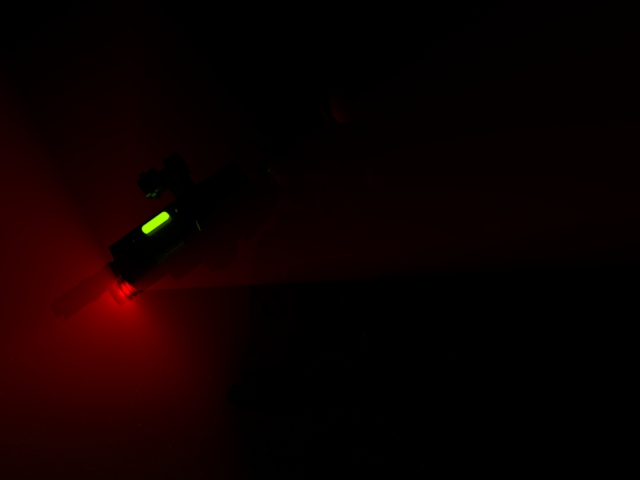
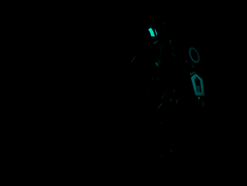
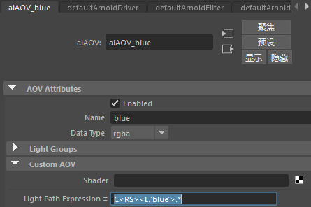

灯光路径表达式简介
| 美景渲染 | 镜面反射 LPE AOV |
在将灯光输出到特定 AOV 时，灯光路径表达式 (LPE) 很有用。LPE 描述灯光在场景中的传输，从光源开始，在对象之间反弹，最后在摄影机处结束。LPE 可用于将 Arnold 中的特定灯光贡献提取到单独的内置或自定义 AOV 中，然后可以在合成软件包中以各种方式输出和重新组合它们。
建议您首先熟悉灯光路径表达式 AOV。
最终场景可以在学习场景页面上找到。
内置 LPE AOV
自定义 AOV
灯光组和 LPE
自定义着色器
内置 LPE AOV
LPE 不是特别方便美工人员使用，因此 Arnold 提供了一系列内置的 LPE AOV。下面是已在此场景中使用的内置灯光路径表达式 AOV 的一些示例。
 |
 |  |
 |
美景：C.* |
漫反射反照率：C<RD>A |
漫反射直接：C<RD>L |
漫反射间接：C<RD>[DSVOB].* |
|  | |||
漫反射：C<RD>.* |
直接：C[DSV]L |
自发光：C[LO] |
间接：C[DSV/][DSVOB].* |
 |
 |
 | |
镜面反射直接：C<RS>L |
镜面反射间接：C<RS>[DSVOB]./* |
镜面反射：C<RS>.* |
SSS 反照率：C<TD>A |
 |
|||
直接：C[DSV]L |
间接：C[DSV][DSVOB].* |
SSS：C<TD>.* |
Transmission:C |

在 AOV 节点中输入 LPE 'C[T].*L|O' 并在 Arnold 渲染视图中查看的自定义 AOV
自定义 AOV
内置 AOV 适合大多数任务使用。但是，自定义 AOV 可在使用 LPE 时提供更多控制。例如，您可以在渲染场景时选择要使用的 LPE 组合。
示例
在下面的示例中，C[ST].*[LO] 渲染镜面反射和透射 [ST]。本例中并未使用漫反射 (D)，因此没有渲染背景，因为它只有一个漫反射组件。
Transmission: C[T].*[LO] |
Specular, Transmission: C[ST].*[LO] |
下面是另外一些 LPE 与自定义 AOV 结合使用的示例。
Diffuse: CD.*L |
Direct + Specular + Volume Scattering: C[DSV]L |
|  | |
Emission + Emission Indirect: C.*O |
Emission: C[LO] |
灯光组和 LPE
也可以输出逐灯光 AOV。合成 AOV 时，将灯光组与 LPE 组合可以作为一个功能强大的工具。默认情况下，LPE 使用场景中的所有灯光。我们可以使用灯光组限制来自单个或多个灯光的灯光贡献。
在本例中，我们为每个灯光使用了以下 AOV 灯光组名称：主灯光（白色）、边缘光 1（洋红色）和边缘光 2（蓝色）。
我们将添加一个自定义 AOV，例如使用“RGBA_”作为前缀。因此，蓝色边缘光的灯光组名称为“RGBA_blue”。
本示例中使用了 RGBA，但您也可以使用任何其他 [LPE]。
| 主灯光 AOV：RGBA_white | 边缘光 1 AOV：RGBA_magenta | 边缘光 2 AOV：RGBA_blue |
- 现在，我们可以使用 <L.'groupname'> 语法，用以下表达式来隔离来自蓝色灯光的镜面反射作用：
C<RS><L.' blue '>.*
对于灯光组 AOV，需要使用 <L.> 而不只是 L。
|  |
| 来自蓝色边缘光的镜面反射：C |
|  |
自定义着色器
我们可以限制表达式只使用特定的着色器参数。在下面的示例中，C<RS[^'coat']>.* 已用于渲染场景（无涂层）。因此，当“涂层”(Coat)为 1 时，头盔着色器在渲染的图像中不明显。但是，当“涂层”(Coat)小于 1 时，镜面反射 (RS) 在头盔中可见。
| 当头盔的“涂层”(Coat)值为 1 时，头盔不可见 | 仅镜面反射 |